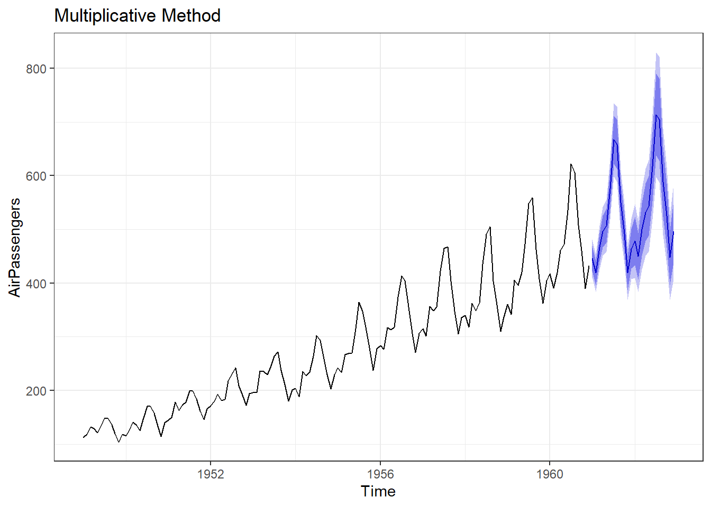
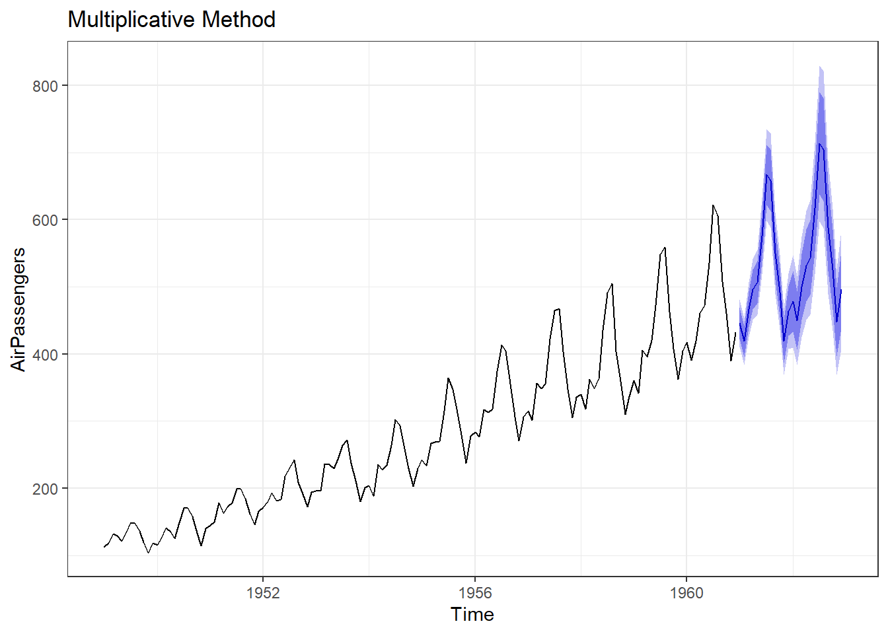

Chapter 15 Time Series Analysis
Time series analysis is an essential technique for forecasting and analyzing trends in data over time. It is commonly used in various fields like finance, economics, and engineering.
So a question arises, what is a time series? A time series is a sequence of data points collected over time, where the observations are recorded in chronological order. Time series analysis involves analyzing and modeling these data points to understand patterns, trends, and make predictions about future values. It is therefore used in predictive as well as descriptive analysis.
Time Series Analysis plays an important role in audit analytics as well. A few of the use cases can be-
- Revenue Analysis: An auditor may analyze revenue data over time to identify irregularities or suspicious patterns that could indicate potential fraud or misstatement. By examining the revenue time series, the auditor can look for unexpected fluctuations, unusual growth or decline trends, or abnormal seasonality. Deviations from historical patterns or industry benchmarks may indicate fraudulent activities, such as revenue manipulation, fictitious transactions, or irregular recognition practices.
- Inventory Analysis: Auditors often analyze inventory data to assess the adequacy of inventory levels, identify potential inventory obsolescence or shrinkage, and evaluate the efficiency of inventory management. Time series analysis can be valuable in understanding inventory patterns and identifying potential risks or anomalies.
There are several time series data which are loaded by default in R; a few of these are listed below. We will use these datasets to understand the various concepts related to time series analysis.
AirPassengerscontaining monthly airline passenger numbers from 1949-1960. See figure 15.1 (a)Nilecontains flow of Nile river data. See figure 15.1 (b)sunspotscontaining monthly sunspot numbers from 1749-1983. See figure 15.1 (c)JohnsonJohnsonwhich contains quarterly earnings per Johnson & Johnson share. See figure 15.1 (d)
Figure 15.1: Few time series data sets in R
To analyse any time series, we have to understand its different components.
15.1 Components of Time series
A time series can be decomposed into several components:
- Level: The baseline value or average of the series over time. It represents the long-term behavior of the series. This is basic component, and is always present in a time series object. E.g. In a straight horizontal line only level is there which is equal to the value of y intercept.
- Trend: The overall direction of the series. It indicates whether the series is increasing, decreasing, or staying relatively constant over time. E.g. A clear increasing trend can be seen in Johnson & Johnson earnings, in Figure 15.1 (d).
- Seasonality: The repetitive and predictable patterns within the series that occur at regular intervals. Seasonality can be daily, weekly, monthly, quarterly, or yearly, etc. E.g. In figure 15.1 (d) we may see seasonal patterns in earnings of Johnson&Johnson share.
- Errors (Residuals): The random fluctuations or noise in the series that cannot be explained by the level, trend, or seasonality. E.g. See figure 15.1 (c). The error component is an important aspect of time series analysis because it provides information about the uncertainty and variability of the data.
15.2 Additive or multiplicative components
In time series analysis, the trend, seasonal, and residual components can be modeled as either additive or multiplicative. The choice of the model depends on how the components combine to create the observed values of the series.
An additive model assumes that the components of the time series are added together to create the observed values. In other words, the value of the time series at any point in time is equal to the sum of the trend, seasonal, and residual components at that point in time. This is expressed mathematically as:
\[ y_t = T_t + S_t + e_t \]
where \(y_t\), \(T_t\), \(S_t\) and \(e_t\) are the values of the series, trend component, seasonal component and residuals, respectively at time \(t\).
A multiplicative model, on the other hand, assumes that the components of the time series are multiplied together to create the observed values. In other words, the value of the time series at any point in time is equal to the product of the trend, seasonal, and residual components at that point in time. This is expressed mathematically as:
\[ y_t = T_t \times S_t \times e_t \]
where \(y_t\), \(T_t\), \(S_t\) and \(e_t\) are defined as before. We can convert multiplicative time series into additive time series by taking \(log\). Note that seasonal component in AirPassengers time series depicted in 15.1 (a) is multiplicative. See Figure 15.2.


Figure 15.2: Transforming Time Series
We will learn about decomposing time series components in next sections.
Damped Trends: Gardner and Mckenzie, in 198531 observed that most time series methods assume that any trend will continue unabated, regardless of the forecast lead time. They, based on empirical findings, suggested that forecast accuracy can be improved by either damping or ignoring altogether trends which have a low probability of persistence. We will learn about this concept, as well in next sections.
15.3 Practical examples in R
Before analysing time series, in R lets see how time series objects are dealt in R.
Pre-requisites
Though most of the time we will be using base R, yet forecast is a fabulous package in R, developed by Rob Hyndman, which we will be using for predicting. Predicting values help us understand how well we have captured the hidden trends and patterns in any time series.
15.3.1 Creating a time series object in R
R provides us a simple function ts() to convert a series of observations (basically a vector) into a specific time series object. The syntax is -
ts(data,
start = 1,
end = numeric(length(data)),
frequency = 1,
...)where:
data: a numeric vector or matrix containing the data for the time seriesstart: the start time of the time series, represented as either a numeric or a Date or POSIXct objectend: the end time of the time series, represented as either a numeric or a Date or POSIXct objectfrequency: the number of observations per unit time for the time series. For example, if the data is recorded monthly, the frequency would be 12...: additional arguments that can be passed to the function, such asnames,delim, ortsp(time series start and end points)
Example-1: Lets create a time series.
# Create a numeric vector representing monthly sales data for a year
sales <- c(10, 20, 30, 25, 35, 40, 45, 50, 55, 60, 65, 70)
# Create a time series object with monthly frequency starting from January
sales_ts <- ts(sales, start = c(2022, 4), frequency = 12)
# Print the time series object
sales_ts## Jan Feb Mar Apr May Jun Jul Aug Sep Oct Nov Dec
## 2022 10 20 30 25 35 40 45 50 55
## 2023 60 65 70We can check its class.
## [1] "ts"Lets also check Nile, which is already available in base R.
## Time Series:
## Start = 1871
## End = 1970
## Frequency = 1
## [1] 1120 1160 963 1210 1160 1160 813 1230 1370 1140 995 935 1110 994 1020
## [16] 960 1180 799 958 1140 1100 1210 1150 1250 1260 1220 1030 1100 774 840
## [31] 874 694 940 833 701 916 692 1020 1050 969 831 726 456 824 702
## [46] 1120 1100 832 764 821 768 845 864 862 698 845 744 796 1040 759
## [61] 781 865 845 944 984 897 822 1010 771 676 649 846 812 742 801
## [76] 1040 860 874 848 890 744 749 838 1050 918 986 797 923 975 815
## [91] 1020 906 901 1170 912 746 919 718 714 74015.3.2 Plotting Time Series Objects
To plot ts object we can simply use plot() command or alternatively we can use ggplot2 as well.
# Plotting in base R
plot(sales_ts, main = "Sales during FY 2022-23\nDummy Data by author")
forecast::autoplot(AirPassengers) +
scale_y_log10('Logrithmic values') +
ggtitle('AirPassengers converted to additive') +
theme_bw()
Figure 15.3: Example of time series plotting in R; Base R (Left) and ggplot2 (Right)
Note: Library forecast in R also provides us a function autoplot() which plots a time series object, similar to plot(), but the plot returned here is a ggplot2 object which can be modified/fine-tuned using ggplot2 functions.
15.4 Time series modelling and forecasting
As we have already discussed, forecasting future plays an important part of time series analysis; an important prerequisite is to model our data. In fact, the forecasting/modelling techniques can be broadly classified into two categories, data based techniques and model-based techniques.
Data-based techniques
Data-based techniques, also known as statistical or empirical techniques, focus on analyzing the patterns and characteristics of the observed time series data directly. These techniques do not explicitly assume a specific underlying model structure. Instead, they rely on statistical properties and patterns present in the data. Examples of data-based techniques include:
15.4.1 Naive method
This method assumes that the future value will be the same as the last observed value. This is the simplest and most basic forecasting method and hence named naive. The formula for the naive method is:
\[ \text{Naive method: }\hat{Y}_{T+1} = Y_T \]
Here, \(\hat{Y}_{T+1}\) is the forecast value for the next time period and \(Y_T\) is the last observed value i.e.for a series of \(T\) observations. Thus, predicting future values using naive method require no special skill.
Problem Statement-1: Lets predict say 5, future values of Nile flow data. In forecast there is a function naive which will do the job, once we give the value of parameter h which is short for forecasting horizon. In Figure 15.4, we can see forecast values, in red, which are exactly same as previous/last value.
forecast::naive(Nile, h = 5) %>%
autoplot() +
theme_bw() +
labs(title = "Nile flow - forecast by Naive method",
x = "Year")
Figure 15.4: Naive forecasting
If we arent interested in visualising confidence values (by default 80% and 95% confidence values are shown in bands), we can tune parameter level accordingly.
15.4.2 Moving averages
In this technique, the forecast value is computed as the average of the most recent observations within a sliding window of fixed length, say \(n\).. It is a technique to smooth out a time series by averaging neighboring values. It helps in reducing noise and revealing underlying trends.
The formula for the moving average method is:
\[ \hat{Y}_{t+1} = \frac{1}{n}(Y_t + Y_{t-1} + ... + Y_{t-n+1}) \]
Here, \(\hat{Y}_{t+1}\) is the forecast value for the next time period and \(Y_t\), \(Y_{t-1}\), , \(Y_{t-n+1}\) are the past \(n\) observations.
Smoothing through moving average can either be centre-weighted or tailed-weighted. In former, \(k\) i.e.order of the moving average, should be an odd number because each data point is replaced with the mean of that observation and \((k-1)/2\) observations before and \((k-1)/2\) observations after it. Smoothed time series Nile for different k can be seen in Figure 15.5.
## Scale for y is already present.
## Adding another scale for y, which will replace the existing scale.
## Scale for y is already present.
## Adding another scale for y, which will replace the existing scale.
## Scale for y is already present.
## Adding another scale for y, which will replace the existing scale.
## Scale for y is already present.
## Adding another scale for y, which will replace the existing scale.## Warning: Removed 6 rows containing missing values or values outside the scale range
## (`geom_line()`).## Warning: Removed 14 rows containing missing values or values outside the scale range
## (`geom_line()`).
## Removed 14 rows containing missing values or values outside the scale range
## (`geom_line()`).
Figure 15.5: Simple Moving Averages
Problem Statement-2: Lets try to visualise moving average trend in Nile data. We will use ma function from forecast for this. In left side Figure of 15.6 we have a smoother (with k = 7) time series and 10 forecast values using last value of moving average.
We can also use rollmean function from zoo library, which is another package to analyse time series objects. Refer right-side figure in 15.6. In this example, we have used wineind data/time series which shows Australian total wine sales by wine makers in bottles <= 1 litre. Jan 1980 Aug 1994. One of the advantage using this method, is that we can see both original and smoothed time series.

Figure 15.6: Simple Moving averages
15.4.3 Exponential smoothing
Exponential smoothing techniques update forecasts based on weighted averages of past observations, giving more weight to recent observations. Examples include simple exponential smoothing, Holts method, and Holt-Winters method.
As the name suggests simple exponential smoothing or SES is simplest of these. Simple exponential smoothing (SES) is actually a moving weighted average where recent observations are given more weights while calculating averages. This method is suitable for forecasting data with no clear trend or seasonal pattern.
\[ \hat{y}_{T+1} = \alpha{y_T} + \alpha(1- \alpha){y_{T-1}} + \alpha(1 - \alpha)^2{y_{T-2}} + ... \]
The value of \(\alpha\), the smoothing parameter, in above equation should follow \(0 \le \alpha \le 1\). Clearly different values of \(\alpha\) will give different smoothing and we will have to adopt most suitable one, one such example with \(\alpha = 0.1\) is shown in the Figure 15.7 (Left).
Holt extended SES by introducing trend component and thus a new smoothing parameter for trend \(\beta\). The method is also named after him as Holts Linear Method of exponential smoothing. Now there are are two equations, mathematically.
\[ \begin{aligned} \hat{y}_{t+h|t} &= l_t + hb_t \\ l_t &= \alpha y_t + (1-\alpha)(l_{t-1} + b_{t-1}) \\ b_t &= \beta(l_t - l_{t-1}) + (1-\beta)b_{t-1} \end{aligned} \]
\(\alpha\) and \(\beta\) (again \(0 \le \beta \le 1\)) in above equations are smoothing parameters for level and trend components, respectively; and \(h\) is forecast horizon. Also, \(y_t\) is the actual value, \(l_t\) is the level (or intercept), \(b_t\) is the trend (or slope) of the time series at time \(t\). Refer 15.7 (Right).
To apply SES, in R, we can use function ses and for applying Holts smoothing, we can use holt; both from forecast library. Example usages are as follows.
lynxses <- ses(lynx, h= 10, alpha = 0.1)
holtfit <- holt(airmiles, h = 10, alpha = 0.3, beta = 0.1)
autoplot(lynxses) +
autolayer(lynxses$fitted) +
ggplot2::ggtitle('SES with alpha = 0.1 : Lynx data') +
ggplot2::theme_bw() +
ggplot2::theme(legend.position = "bottom") +
ggplot2::labs(color = "")
autoplot(holtfit) +
autolayer(holtfit$fitted) +
ggplot2::ggtitle("Holt's Linear Trend method with beta = 0.1 : AirMiles data") +
ggplot2::theme_bw() +
ggplot2::theme(legend.position = "bottom") +
ggplot2::labs(color = "")
Figure 15.7: Simple Exponential Smoothing (Left) Vs. Holts Linear Method (Right)
As we have discussed earlier, damped trends work better many times. So based on Mckenzie and gardner work, an additional dampening paramater \(\phi\) was introduced. The equations were modified as - \[ \begin{aligned} \hat{y}_{t+h|t} &= l_t + (\phi + \phi^2 + ... + \phi^h)b_t \\ l_t &= \alpha y_t + (1-\alpha)(l_{t-1} + \phi b_{t-1}) \\ b_t &= \beta(l_t - l_{t-1}) + (1-\beta)\phi b_{t-1} \end{aligned} \]
Clearly, if \(\phi = 1\), the above equations are equivalent to Holts Linear Method. \(\phi\) for values \(0 < \phi < 1\), dampens the trend, as shown in figure 15.8 (Left). A comparison of both can be seen in the Figure 15.8 (Right).
To extend holts linear method with damped trends in R, we can set parameter damped = TRUE in holt function discussed above. Example code can be seen below.
library(ggplot2)
holtfit <- holt(airmiles, h = 10, alpha = 0.3, beta = 0.1, damped = TRUE, phi = 0.8)
autoplot(holtfit) +
autolayer(holtfit$fitted) +
ggplot2::ggtitle('Damped Trend Forecast with phi=0.8') +
ggplot2::theme_bw() +
ggplot2::theme(legend.position = "bottom") +
ggplot2::labs(color = "")
holtfit <- holt(airmiles,
h = 10,
alpha = 0.3,
beta = 0.1)
holtfit2 <- holt(
airmiles,
h = 10,
alpha = 0.3,
beta = 0.1,
damped = TRUE,
phi = 0.8
)
autoplot(airmiles)+
autolayer(holtfit, series="Holt's method", PI = FALSE) +
autolayer(holtfit2, series="Holt's method with damped trend", PI = FALSE)+
ggplot2::ggtitle("Holt's method") + xlab("Year") +
ylab("Revenue passenger miles") +
guides(colour=guide_legend(title="Method")) +
ggplot2::theme_bw() +
theme(legend.position = "bottom")
Figure 15.8: Linear methos Vs. Damped trends
Now to incorporate seasonality (with say \(m\) periods) along with trend and level, Holt and Winters suggested to incorporate additional parameter \(\gamma\) in above equations.
\[ \text{Holt-Winters method:} \] \[ \begin{aligned} \hat{y}_{t+h|t} &= l_t + hb_t + s_{t+m-(m-1 \bmod m)} \\ l_t &= \alpha(y_t - s_{t-m}) + (1-\alpha)(l_{t-1} + b_{t-1}) \\ b_t &= \beta(l_t - l_{t-1}) + (1-\beta)b_{t-1} \\ s_t &= \gamma(y_t - l_{t-1} - b_{t-1}) + (1-\gamma)s_{t-m} \end{aligned} \]
An example can be seen in figure 15.9. To apply Holt-Winters method in R, we can use hw function with desired values of parameters. An example code may be as follows, where we have tried to extend AirPassengers time series with this method with both additive and multiplicative trends.
hw1 <- hw(AirPassengers, seasonal = "additive")
hw2 <- hw(AirPassengers, seasonal = "multiplicative")
autoplot(hw1) +
ggtitle("Additive Model")
autoplot(hw2) +
ggtitle("Multiplicative Method") 

Figure 15.9: Holt-Winters Method of Forecasting
Seasonal decomposition methods
Seasonal decomposition techniques decompose a time series into its different components, such as trend, seasonality, and noise. This allows for a better understanding of the individual components and their impact on the overall series. There are several methods to decompose a time series into its different components. We will however, discuss two of these.
15.4.4 Classical seasonal decomposition
First of these methods is classical decomposition method which decomposes a time series into its trend, seasonal, and residual components. It assumes that the seasonal component repeats identically from year to year, and the trend component changes linearly over time. The steps involved in the classical decomposition method are as follows:
- Trend Component: The trend component is estimated using a moving average or regression method.
- Seasonal Component: The seasonal component is estimated by averaging the values across the same seasonal periods in different years.
- Residual Component: The residual component is obtained by subtracting the trend and seasonal components from the original time series.
Problem Statement: Lets try to decompose a time series say AirPassengers to see its components. To decompose a time series in R, we will use function decompose as shown in the following code. Decomposing time series in R gives us four different plots each for (i) Observed i.e.original values, (ii) trend, (iii) seasonality and (iv) random noise available.
Case-1: Additive decomposition
## Length Class Mode
## x 144 ts numeric
## seasonal 144 ts numeric
## trend 144 ts numeric
## random 144 ts numeric
## figure 12 -none- numeric
## type 1 -none- characterCase-2: Multiplicative decomposition. In this case we can use argument type.
decomposed_air_passengers2 <- decompose(AirPassengers, type = "multiplicative")
summary(decomposed_air_passengers2)## Length Class Mode
## x 144 ts numeric
## seasonal 144 ts numeric
## trend 144 ts numeric
## random 144 ts numeric
## figure 12 -none- numeric
## type 1 -none- characterA plot of decomposed AirPassengers, using classical approach is shown in Figure 15.10.
Figure 15.10: Seasonal Decomposition Techniques
15.4.5 Seasonal and Trend decomposition using Loess32.
STL (Seasonal and Trend decomposition using Loess) is a robust and flexible method for decomposing a time series into its trend, seasonal, and residual components. It uses local regression (Loess) to estimate the trend and seasonal components. The STL algorithm is as follows:
- Seasonal Component: The seasonal component is estimated using Loess, which fits a smooth curve to the seasonal patterns.
- Trend Component: The trend component is estimated by removing the estimated seasonal component from the original time series.
- Residual Component: The residual component is obtained by subtracting the estimated trend and seasonal components from the original time series.
To decompose time series in R, using STL, we will use function stl as shown below. A plot of STL decomposed AirPassengers is shown in figure 15.11.

Figure 15.11: STL Decomposition
Model-based techniques
Model-based techniques involve fitting a specific mathematical or statistical model to the observed time series data. These techniques assume a particular structure for the data and estimate model parameters based on that. Model-based techniques typically require more assumptions but can provide a more detailed understanding of the underlying dynamics. Examples of model-based techniques include:
Autoregressive Integrated Moving Average (ARIMA): ARIMA models capture the linear dependencies between lagged observations and differences of the time series. They are commonly used for modeling stationary time series.
Seasonal ARIMA (SARIMA): SARIMA models extend the ARIMA framework to incorporate seasonality in the data. They are suitable for time series exhibiting both trend and seasonality.
In future version of the book, we will discuss these methods.
15.5 Plotting different elements of time series
In R, we can use functions such as -
ggseasonplot(): to create a seasonal plotggsubseriesplot(): to create mini plots for each season and show seasonal meansgglagplot(): Plot the time series against lags of itselfggAcf(): Plot the autocorrelation function (ACF)
Example-1:
theme_set(theme(axis.text.x = element_text(angle = 90,
vjust = 0.5,
hjust=1)))
library(patchwork)
g1 <- ggseasonplot(AirPassengers) +
theme_bw()
g2 <- ggsubseriesplot(AirPassengers) +
ggtitle('Sub-Series Plot') +
theme_bw()
(g1 / g2)Figure 15.12: Seasonalilty
Example-2: Lag Plot of AirPassengers may be seen at Figure 15.13. In the figure notice that plot at lag=12 suggest that series has seasonality with 12 periods.
gglagplot(AirPassengers) +
ggtitle('Lag Plots') +
theme_bw() +
theme(legend.position = "bottom") +
labs(color = NULL) +
guides(color = guide_legend(nrow = 1))Figure 15.13: Seasonalilty through Lagplots
Everette S. Gardner and Ed. Mckenzie, Forecasting Trends in Time Series, Management Science 31, no. 10 (1985): 123746, https://doi.org/10.1287/mnsc.31.10.1237.